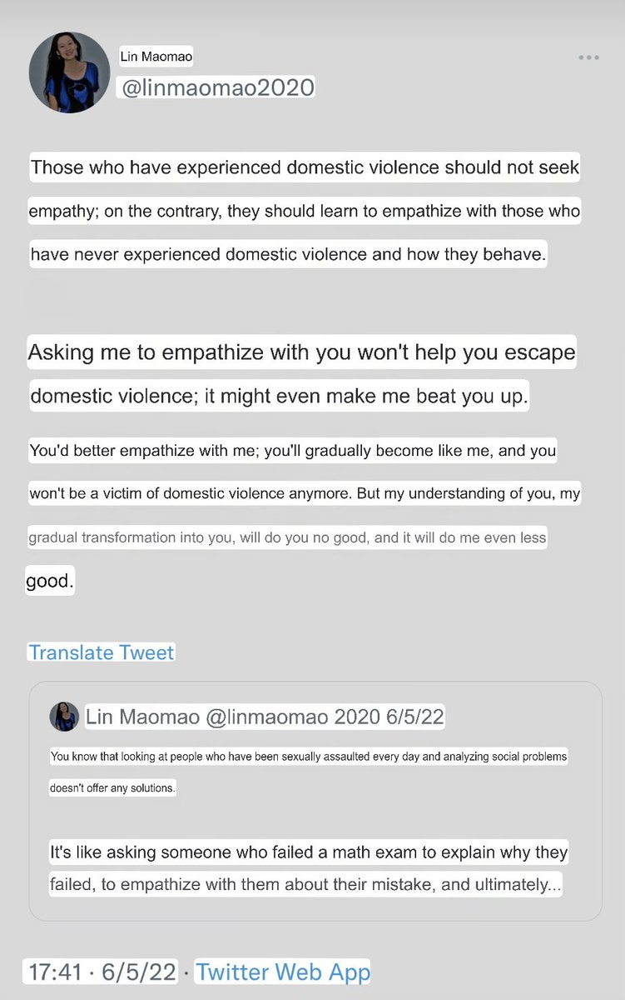

amber水母🍥
@amber_medusozoa
original post

amber水母🍥
@amber_medusozoa
wait until you see how they view domestic abuse victims https://t.co/0H1t4mZfpR https://t.co/YauefZrnxw
林毛毛
@linmaomao2020
包括被家暴的人，不应该寻求共情，恰恰相反，他们应该学习去共情那些从未经历过家暴的人，都是怎么行为处事的。
你要求我跟你共情，并不能帮助你走出家暴，反而有可能让我暴打你一顿。
你不如来跟我共情，你会逐渐变成我，你就不会被家暴了。而我理解你，逐渐变成你，对你毫无益处，对我更没好处。 https://t.co/XizJwTURR5